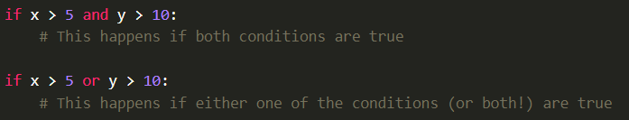
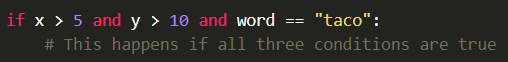
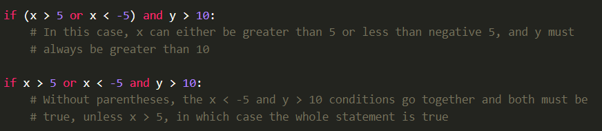
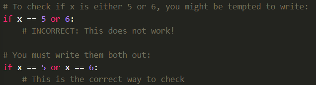
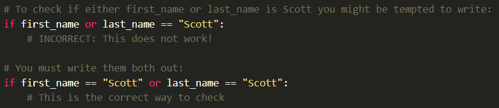
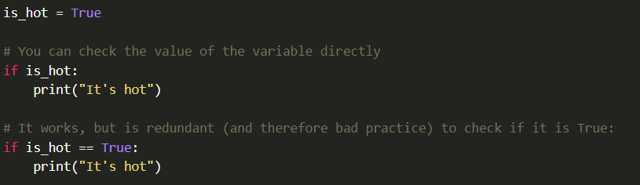
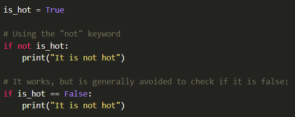

As shown, you can combine two conditions with "and" and "or":
And you can mix and match any expressions that evaluate to true:
Just as mathematical operators have precedence rules where "*" happens before "+", the "and" condition takes precedence over the "or" condition, so if you want to mix them and have the or condition happen first, you need to use parentheses.
Sometimes, these can get a little confusing, so it os a godd idea to use parentheses in complicated expressions, to make it clear what you intend to happen.
It is common to want to test the same variable for two conditions, or to test two variables against the same condition. In these cases, you may be tempted to leave part out, but this will not work, anytime you use operators like ">" or "==" , you must provide both left and a right hand side for it.
 In addition to comparing against other varaibles, you can also set a variable itself to be a "True" or "False". To this point, we have learned about the variable types of int, float, and string. Variables that are either true or false are a new data type called Boolean variables (names after a mathematician, George Boole).
You can set a boolean variable directly, such as "is_hot = True" or "is_hot = False". Notice that you must always use a capital T on True and a capital F on False.
Because these are variables are already either true of flase, you don't need to compare them against another value. Examples below:
You can check if a boolean variable is not true with the "not" keyword:
Boolean variables are typically named with words that indicate that it will only have two values, and help you understand what true means. For example, if you want to have a boolean variable that determines whether someone is an adult, you would typically choose a name of "is_adult" rather than "age" or even "adult". Common boolean variable names "is_xxx, has_xxx, can_xxx," etc.